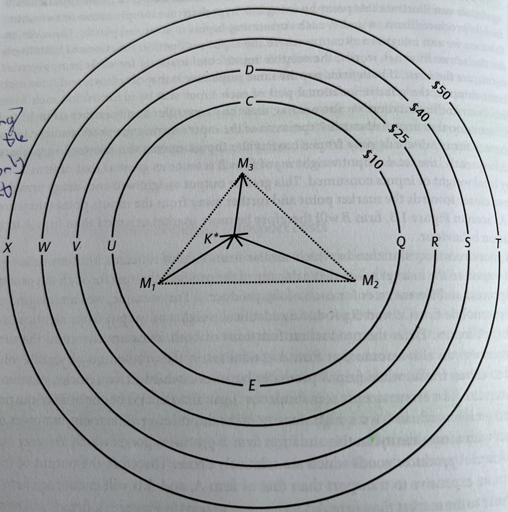
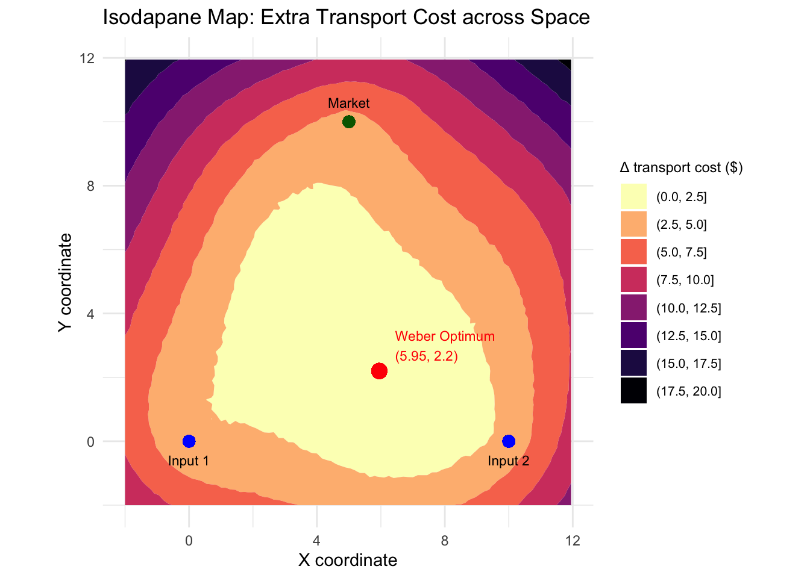
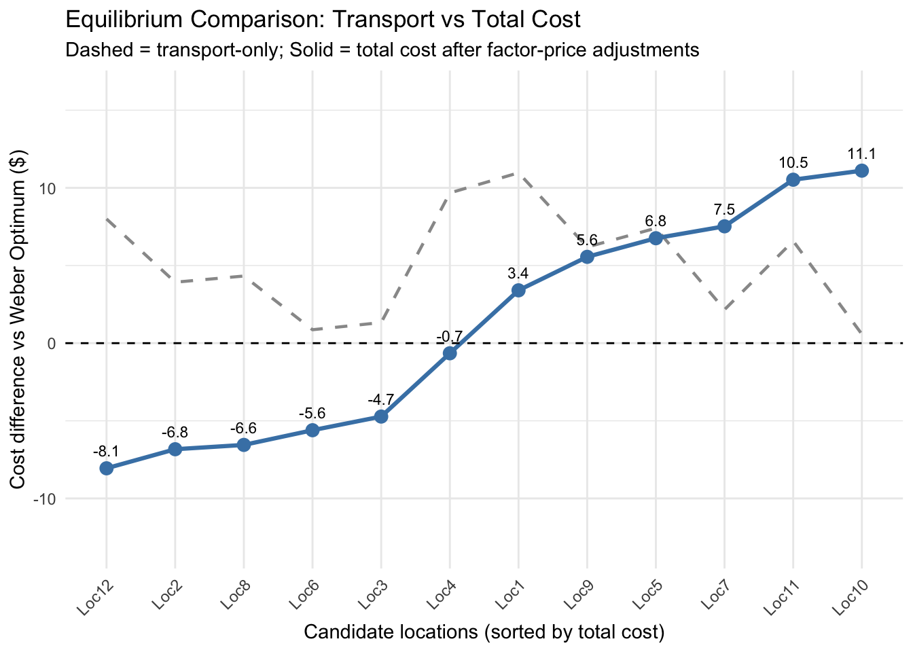

#Generate the x-axis [the numbers are somewhat arbitrary in themselves but they do define the boundaries of your grid]
x_seq <- seq(-2, 12, by = 0.15)
#Generate the y-axis [the numbers are somewhat arbitrary but they do define the boundaries of your grid]
y_seq <- seq(-2, 12, by = 0.15)
#Put it all together
grid_points <- expand.grid(x = x_seq, y = y_seq)Weber’s Industrial Location Model
Economic Geography
Economic Modelling
How might a single firm decide where to set up shop?
When a firm wants to open a factory or plant, how does it decide where to go?
You could locate near raw materials, near consumers, near cheap labor, or near other firms. Each option has advantages and trade-offs. Transport costs rise with distance, wages differ across regions, clustering may bring efficiencies or congestion. So how does a rational firm make this decision?
This was the question Alfred Weber tried to answer in his 1909 book Theory of the Location of Industries. His answer became a fundamental building block of microeconomic (and geographic!) firm location decisions — the least-cost model of industrial location.
The Core Idea: Location as Cost Minimization
The starting point for this model begins with the premise that firms exist to make profit and the best way to do this is to minimize production costs. In this model, markets are perfectly competitive and firms are rational as well as price takers. This means that a single firm cannot manipulate prices. There is also no possibility for subsitution in the production process (i.e., there is a fixed relationship between the quantities of each input required to produce a single unit of output). Finally, where inputs are sourced from, and where markets are located, does not change (i.e., they are “given”).
These assumptions heavily simplify the economic context in which this firm operates. On the geographical side of things, it is further assumed that the availability, price, and quality of land, labour, and capital (the relevant factors of production) are the same everywhere (i.e., geography is homogenous).
Important
A slight word-play perhaps, but this is not to say that the prices of labour, capital, and land are equal to each other. Rather, all locations exhibit the same attributes in terms of the availability of factors of production.
Weber’s framework assumes that the prices of all inputs, outputs, and production factors are exogenous and uniform across space. As a result, the only factor influencing the relative profitability of different locations is the distance between input sources and markets. The firm’s sole decision, therefore, is where to locate production.
By isolating location as the key decision variable, Weber transformed geography into a problem of cost minimization - a search for the point where total costs are lowest and profits highest. This emphasis on least-cost location reflected his view that industrial siting is driven primarily by the economic imperative of efficiency. In this framework, profitability depends on selecting a location that minimizes the total transport costs of moving inputs to the production site and outputs to the market.
The Technical Details of The Simple Model
Visually, we might view this problem using the following diagram:

Here, the firm is located at \(K\) and consumes two material inputs (\(M_1, M_2\)) which are combined to produce a single product (\(M_3\)) that is eventually sold at market. \(d\) represents the geographic distance these respective goods need to travel to get from their source to their end destination. In the case of \(M_1\) and \(M_2\), this destination is the firm. In the case of the firm’s output (\(M_3\)), this destination is the marketplace. A general production function can be created for this firm:
\[ m_3 = ~f~(k_1, m_1, k_2, m_2) \]
Where \(k\) represents the quantity of each input (i.e., \(m\)).
Note
Typically, when thinking about transportation costs, you think of the haulage costs associated with moving a specified quantity of something (\(k\)) across geographical space (\(d\)). These haulage costs are normally calculated by weight, which is typically how scholars technically interpret \(m\) in Equation 1.0. A more obvious way to describe this is that the quantity of \(m_3\) produced becomes a function of the quantity and weight of each input.
In the simplest case, we might assume that the firm needs precisely one unit of each input (i.e., \(k_1 = k_2 = 1\)) to produce a single unit of output (\(m_3\)), thus simplifying the function to:
\[ m_3 = Min(m_1, m_2) \]
If the price per unit of output (\(p_3\)) is fixed, the firm maximizes profit by choosing the location where the combined transport costs of inputs and outputs are lowest, ceteris paribus. This point is known as the Weber Optimum Location. Finding it involves comparing total transport costs across potential sites and selecting the one that minimizes total costs (\(TC\)). That is:
\[ TC = Min \sum_{t=1}^{3} m_i, t_i, d_i \]
In this case, \(i\) reflects the particular weights (i.e., quantity), transport rates (i.e., haulage costs), and geographical distances over which goods are shipped to and from each (potential) firm location point (\(K\)). Given the assumptions that this firm will behave so as to maximize its profits, the minimum cost location will be the actual chosen location of the firm, providing a firm empirical lens through which we can assess this model.
Note
Every ton of material and every finished good must be transported. If transport cost is proportional to weight and distance, the total transport cost depends on how far materials and goods must travel and how heavy they are. This gives rise to a key trade-off when deciding where to locate:
If raw materials are heavy and lose weight during processing; that is, if goods get heavier/lighter at different stages of production, like in smelting, it might make sense to locate near the source because it is expensive to haul unprocessed materials.
If finished goods are heavier than inputs, it might be better to locate near the market.
If both have similar weight, the best location may lie somewhere in between.
This dynamic is often described as the “pull” that input sources exert on a firm’s location choice. Though markets can also exert their own pull. In special cases where the firm’s output has zero weight or bulk (e.g., electricity produced from coal), transport costs for the output are zero. The optimal location then lies somewhere along the line connecting the input sources, and the market’s location is irrelevant.
More typically, however, outputs are bulky and costly to transport, making proximity to markets important. The problem becomes even more interesting if firms differ in technical efficiency—which affects how much output they produce from given inputs, or if products vary in density, since denser goods (e.g., small cars vs. SUVs) generally incur lower per-unit transport costs.
Changing Factor Prices
The simple model, although making some heroic assumptions about the geographic and economic contexts in which individual firms operate, does provide some useful intuition on how to think about why firms locate where they do. However, arguably more interesting than calculating the Weber optimum location for multiple, different firms is trying to figure out how this point changes when elements (i.e., parameters) in the production function (Equation 3.0) change.
Up until now, we have assumed that labour and land prices are identical across all locations, although in reality we know that factor prices vary significantly over space. The Weber model allows for such considerations, and can thus be extended to think about the conditions under which a firm will look for alternative locations.
Weber visualized this reasoning using isodapanes — contour rings which show where total production costs change. The closer you are to the center (i.e., the Weber Optimum), the lower the total cost. As you move away, cost increases. If total costs rise, the isodapanes tighten around the optimal point whereby even small deviations become expensive. If transport costs fall, the isodapanes flatten, and the firm has more flexibility in where to locate.
 The firm is still consuming inputs from \(M_1\) and \(M_2\), and still shipping output from \(K^*\) to \(M_3\). Under these conditions, we know that the Weber Optimum is \(K*\); the implication being that if all factor prices are equal across space, then \(K^*\) is also where the firm will locate in the end.
Let’s assume the isodapanes shown above represent changes in transport costs relative to those at the optimal location, \(K^\). For instance, if the firm moved to point \(Q\), transport costs would rise by 10 dollars, ceteris paribus. Without considering other factor costs, such a move clearly reduces profits by 10 dollars and is therefore undesirable. The farther the firm moves from \(K^\), the greater the opportunity cost and the less attractive alternative locations become.
The key question then: how much must local factor prices fall relative to those at \(K^*\) for relocation to make sense? In theory, the answer is straightforward: any increase in transport costs must be fully offset by lower factor costs.
Thus, at point \(Q\), local factor prices must be at least 10 dollars lower than at \(K^*\) for the firm to be indifferent between the two locations. In this case, spatial equilibrium is achieved, and the two sites become perfect substitutes from the firm’s perspective.
Note
This insight captures a real-world logic: firms relocate production to lower-cost labour markets only when the savings outweigh logistical disadvantages. When global shipping costs fell in the late 20th century, for example, isodapanes widened dramatically, allowing production to shift overseas while firms still maintaining profitability.
To ensure that you understand the mechanism, try answering the following questions:
For the firm to be indifferent between \(K^*\) and \(Q\), local factor prices will have to be at least X dollars less than they are at point \(K^*\). What is the value of X?
For the firm to be indifferent between \(K^*\) and \(D\), local factor prices will have to be at least X dollars less than they are at point \(K^*\). What is the value of X?
For the firm to be indifferent between \(K^*\) and \(X\), local factor prices will have to be at least X dollars less than they are at point \(K^*\). What is the value of X?
Transport costs at \(S\) are 40 dollars greater than they are in \(K^*\).
The firms profits will at \(R\) will be equal to those at \(K^*\) if local factor prices at \(R\) are at least 25 dollars lower than they are at \(K^*\).
Indeed, if you know how much the local factors cost at each location, you can very quickly get a picture of how firm location decisions change with changes in local factor prices.
This approach allows us to answer a very important question: how will local wage and local land prices have to vary across space in order for the firms profits to be the same across all locations? That is, where does the equilibrium lie?
The technical answer to this question has already been given: the firms profits will be the same in all locations if the local labour and land factor input prices at each location exactly compensate for the increased total transport costs associated with each location.
What does this all mean?
We know that some locations are more profitable than others for a firm. In the Weber model, this is associated with the price of moving the inputs for a firms production process and the costs associated with transporting the end goods to market. The Weber optimum is the point at which the firm can make the most profits, and thus, the place that will receive the most investment from firms.
It also means that in order to make other locations more attractive, local factor prices have to fall relative to those at the Weber Optimum, but they also need to compensate for any increase in transport costs. If you extend this scenario to include many similar firms as the one described above, the same logic would apply: each individual firm wants to locate at the same least-cost site. But if all firms pile into the exact same spot, some costs may rise (e.g., land scarcity, congestion, or higher wages due to competition for workers).
Once those extra costs are accounted for, the net cost/profit at that location will equal the net cost/profit in other viable locations. This means that, in equilibrium, the level of investment should spread out so that no location has a permanent advantage. That is, every location will have roughly the same net profitability once competition and crowding effects are included.
On the other hand, if wages are not in equilibrium across space, certain areas will automatically appear more attractive as locations for investment. Thus, geography cam confer different competitive advantages on different locations which can only be compensated for by variations in factor/input prices.
An empirical illustration
Let’s put what we just learned into practice. For the sake of simplicity, I am going to make up some data to illustrate how we might work through a problem using the Weber model.
To start with, we need to generate a map. In economic modelling, we typically generate a map by creating a grid that contains all the possible locations a firm can choose to locate at:
Once we have the grid made, we can start thinking about inputs. As in the example above, we imagine a firm that utilizes two inputs and ships its output to one market place. Therefore:
#We need to define where on the grid these factors will go
input1 <- c(0, 0)
input2 <- c(10, 0)
market <- c(5, 10)So now we know the extent of the geography that the firm is operating in. We know the location of the inputs that the firm needs to generate output. And we know the location of the market place the firm will use. Now we must decide upon how costly it is to move each of these:
#For the sake of argument, lets just assume that both inputs and the firm's output have the same base transport cost (i.e., they all have a weight of 1)
w_input1 <- 1.0
w_input2 <- 1.0
w_market <- 1.0Our next step is to calculate the total transport costs for our inputs and outputs. Normally, the Weber model assumes that transport costs rise smoothly and symmetrically from the centre. But this is not entirely realistic; spatial costs are affected by more things than just distance (e.g., topography and infrastructure).
To make this setup more realistic then, I introduce a random “noise field” that adds a bit of “roughness” to the cost surface. That is, I make transport costs irregular to allow for such differences:
set.seed(123)
# Introduce slight spatial "noise" for realism
noise_field <- function(x, y) {
sin(x / 1.5) * cos(y / 2.3) * 0.8 + rnorm(1, 0, 0.05)
}With that done, we can define total transport costs. This is done by calculating the Euclidean (i.e., straight-line) distance between each of the points. That is, the distance between \(input1\), \(input2\), and \(market\). We calculate this distance using the following formula (You might recognize this formula from high-school geometry):
\[ d_i = \sqrt{(x_1-x_2)^2 + (y_1-y_2)^2} \]
This gives us the straight-line distance between each of our points, but now we must also take account of the base cost of transporting each input and output. We do that by multiplying these distances by our weights. At the very end we add on our noise term (which I will call \(𝝀\)) to generate some variation. This gives us the formula:
\[ TC = (w_1d_1) + (w_2d_2) + (w_3d_3) + 𝝀 \]
Which translates to the following function:
transport_cost <- function(x, y) {
d1 <- sqrt((x - input1[1])^2 + (y - input1[2])^2)
d2 <- sqrt((x - input2[1])^2 + (y - input2[2])^2)
dm <- sqrt((x - market[1])^2 + (y - market[2])^2)
w_input1 * d1 + w_input2 * d2 + w_market * dm + noise_field(x, y)
}
grid_points$cost <- mapply(transport_cost, grid_points$x, grid_points$y)With our transport cost function defined, we can begin calculating the Weber Optimum Location, mathematically described as:
\[ (x^*,y^*) = \arg\min_{(x,y)} C(x,y) \]
Or, in other words, the location at which:
\[ TC = Min \sum_{t=1}^{3} m_i, t_i, d_i \] To calculate the Weber Optimum Location, we can use the following R Code:
# Weber optimum (grid search)
optimum <- grid_points %>%
filter(cost == min(cost)) %>%
slice(1)
weber_cost <- optimum$cost
optimum_xy <- c(optimum$x, optimum$y)
#View the Weber Optimum Location and the total transport costs firms face at this location
optimum x y cost
1 5.95 2.2 18.36248This has provided me with the coordinates of the Weber Optimum Location as well as the total transport costs our firm will face at this location. We know that this is the lowest total transport costs our firm will face anywhere within our grid, so we can infer that this is also the most profitable location for this firm.
But these numbers, especially the coordinates, are hard to make sense of out-of-context. For instance, it is not clear what it means to be 5.95 units along the x-axis and 2.2 units up the y-axis. Nor is it incredibly obvious how much lower 18.36 is compared to the next lowest value. As a result, we can visualize our grid, including contours (i.e., isodapanes) that show how total transport costs differ across different locations inside the grid:
# delta_cost surface (for contour map)
grid_points <- grid_points %>%
mutate(delta_cost = cost - weber_cost)
isodapane_plot <- ggplot(grid_points,
aes(x = x,
y = y,
z = delta_cost)) +
#define the legend for the graph
stat_contour_filled(bins = 8,
show.legend = TRUE) +
#plot the location of each input, the market place, and the Weber Optimum
geom_point(aes(x = input1[1],
y = input1[2]),
color = "blue",
size = 3) +
geom_point(aes(x = input2[1],
y = input2[2]),
color = "blue",
size = 3) +
geom_point(aes(x = market[1],
y = market[2]),
color = "darkgreen",
size = 3) +
geom_point(aes(x = optimum_xy[1],
y = optimum_xy[2]),
color = "red",
size = 4) +
#Annotate these points so it is clear what each point corresponds to
annotate("text",
x = input1[1],
y = input1[2] - 0.6,
label = "Input 1",
size = 3) +
annotate("text",
x = input2[1],
y = input2[2] - 0.6,
label = "Input 2",
size = 3) +
annotate("text",
x = market[1],
y = market[2] + 0.6,
label = "Market",
size = 3) +
annotate("text",
x = optimum_xy[1] + 0.5,
y = optimum_xy[2] + 0.8,
label = paste0("Weber Optimum\n(", round(optimum_xy[1],2), ", ", round(optimum_xy[2],2), ")"),
color = "red",
size = 3,
hjust = 0) +
coord_equal() +
scale_fill_viridis_d(option = "magma",
direction = -1,
name = "Δ transport cost ($)") +
labs(title = "Isodapane Map: Extra Transport Cost across Space",
x = "X coordinate",
y = "Y coordinate") +
theme_minimal(base_size = 11) +
theme(
legend.position = "right",
legend.text = element_text(size = 8),
legend.title = element_text(size = 9)
)
#Visualise the plot
isodapane_plot
In the figure above, we can get a sense of where everything is. We can see that the Weber Optimum location is comparatively closer to \(input2\) than \(input1\), but closer to both inputs than to the \(market\). Moreover, we can also see how transport costs change as we move away from the Weber Optimum. We can generally see that as you get farther away, transport costs tend to increase, but it is not entirely linear and there are some irregularities (recall the noise function).
To ensure that you understand the mechanics of what this graph is telling us, try answering the following questions:
If the firm were to relocate anywhere within the yellow (i.e., the first one appearing in the legend), total transport costs would increase by …
The Weber Optimum is far closer to both of the inputs than it is to the market place. This must mean that whatever output the firm is producing, it is cheaper to transport than the inputs in the production process.
The Weber Optimum is the single point with the lowest total transport cost across space. It minimizes total weighted distance.
For the next step of the analysis we are going to explore how factor prices will need to change such that alternative locations become attractive for this firm. To do this, we are going to randomly select coordinates within our grid and generate the transport costs at each location compared with those at the Weber Optimum Location:
set.seed(42)
n_candidates <- 12
candidates <- data.frame(
name = paste0("Loc", seq_len(n_candidates)),
x = runif(n_candidates, min = -1, max = 11),
y = runif(n_candidates, min = -1, max = 11)
)
# Compute transport costs
candidates <- candidates %>%
rowwise() %>%
mutate(transport_cost = transport_cost(x, y),
extra_cost = transport_cost - weber_cost) %>%
ungroup()This will show how total transport costs compare to those at the Weber Optimum. But that is not incredibly interesting, since we could have inferred that from the graph.
So, in addition to this, we shall add “factor-cost adjustments”. That is, we will change the costs of labour, capital, land etc in each of these locations (factor_saving).
From there, we calculate how much each location saves (or loses) in non-transport costs (e.g., cheaper labour, land, or taxes), as well as the total cost difference after adjusting for these savings (net_cost_diff).
set.seed(99)
# Broader variation and slight bias toward positive savings
candidates <- candidates %>%
mutate(
# Some places have large savings (10–30), others penalties (-5–10)
factor_saving = rnorm(n(), mean = 5, sd = 12),
net_cost_diff = extra_cost - factor_saving
)
# Ensure several (not just one) locations are better (negative net cost) for teaching purposes :)
if (sum(candidates$net_cost_diff < 0) < 2) {
better_idx <- sample(seq_len(nrow(candidates)), size = 2)
candidates$net_cost_diff[better_idx] <- -runif(2, 2, 10)
}
# Sort by total cost
candidates <- candidates %>%
arrange(net_cost_diff) %>%
mutate(name = factor(name, levels = name))
print(candidates)# A tibble: 12 × 7
name x y transport_cost extra_cost factor_saving net_cost_diff
<fct> <dbl> <dbl> <dbl> <dbl> <dbl> <dbl>
1 Loc12 7.63 10.4 26.4 8.00 16.1 -8.06
2 Loc2 10.2 2.07 22.3 3.93 10.8 -6.83
3 Loc8 0.616 5.72 22.7 4.32 10.9 -6.55
4 Loc6 5.23 0.410 19.2 0.865 6.47 -5.61
5 Loc3 2.43 4.55 19.7 1.33 6.05 -4.73
6 Loc4 8.97 10.3 28.0 9.68 10.3 -0.651
7 Loc1 9.98 10.2 29.3 11.0 7.57 3.40
8 Loc9 6.88 9.85 24.6 6.19 0.631 5.56
9 Loc5 6.70 10.7 25.8 7.40 0.646 6.76
10 Loc7 7.84 4.70 20.5 2.16 -5.37 7.52
11 Loc11 4.49 10.9 24.9 6.58 -3.95 10.5
12 Loc10 7.46 0.665 18.9 0.577 -10.5 11.1 So even a site far from the Weber Optimum might be better overall if factor costs are low enough. I engineer such a situation here for teaching purposes, as you can tell from the code and table.
To test your understanding, answer the following questions to ensure you understand the table.
At which location does the firm save on factor prices relative to the Weber Optimum, but not by enough to compensate the increase in transport costs?
At which location does the firm save on transport costs relative to the Weber Optimum, but not by enough to compensate the increase in local factor costs?
At which location will the firm be least profitable?
At which location will the firm be most profitable?
We can also visualize this in a graph, and thus get a sense of how the cost structures at different locations compare with the Weber Optimum identified earlier, and as such, generate a system which can show us the extent to which local factor prices will have to change in each location for these locations to be as attractive as the Weber Optimum.
equilibrium_line <- ggplot(candidates,
aes(x = name,
group = 1)) +
# Transport-only cost line (dashed)
geom_line(aes(y = extra_cost),
color = "grey60",
linetype = "dashed",
linewidth = 0.8) +
# Total cost after factor adjustment (solid)
geom_line(aes(y = net_cost_diff),
color = "steelblue",
linewidth = 1.1) +
geom_point(aes(y = net_cost_diff),
size = 3,
color = "steelblue") +
geom_text(aes(y = net_cost_diff,
label = round(net_cost_diff, 1)),
vjust = -1.1,
size = 3) +
geom_hline(yintercept = 0,
linetype = "dashed",
color = "black",
size = 0.5) +
labs(
title = "Equilibrium Comparison: Transport vs Total Cost",
subtitle = "Dashed = transport-only; Solid = total cost after factor-price adjustments",
x = "Candidate locations (sorted by total cost)",
y = "Cost difference vs Weber Optimum ($)"
) +
ylim(min(candidates$net_cost_diff) - 5,
max(candidates$net_cost_diff) + 5) +
theme_minimal(base_size = 11) +
theme(axis.text.x = element_text(angle = 45, hjust = 1))Warning: Using `size` aesthetic for lines was deprecated in ggplot2 3.4.0.
ℹ Please use `linewidth` instead.equilibrium_line 
To wrap up
The Weber industrial location model tackles a problem that remains deeply relevant: firms must balance input, output, and spatial costs in deciding where to locate. While the model assumes only two input points and one market, this triangular setup is deliberately simple as it allows us to visualize how geography shapes investment decisions and how cost differences tilt the economic landscape.
The model’s first contribution is analytical: it clarifies the factor price conditions under which alternative locations become attractive. Its second is dynamic: it reveals how shifts in factor prices can trigger relocation, reshaping supply chains and inter-firm linkages.
Note
You might wonder why firms do not constantly move in response to changing prices. The reason is that moving is costly. Firms relocate only when the savings from lower factor costs outweigh both higher transport costs and these “relocation frictions”.
Weber’s world is intentionally stylized. It omits substitution, agglomeration, and diseconomies, which later models (like Moses’s) incorporate. Yet this simplicity allows us to isolate the spatial minimization of cost. Real economies overlay this logic with clustering effects, congestion, and uneven transport networks, but the underlying principle remains Weberian in many respects.